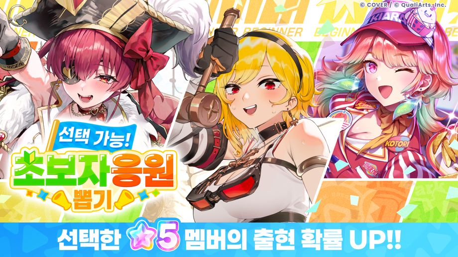

메인 스토리 1장 1화 「꿈의 시작」 클리어 후 7일간 한정!
「선택 가능! 초보자 응원 뽑기」개최!
◆개최 기간
메인 스토리 1장 1화 「꿈의 시작」 클리어 후 7일간 한정
본 뽑기 안내
선택한 멤버의 출현 확률이 UP된 뽑기입니다.
등장하는 ★5 멤버 중에서 3명 선택할 수 있습니다.
주의 사항
・개최 기간 및 내용은 예고 없이 변경될 수 있습니다.
・본 뽑기에 관한 주의 사항은 본 뽑기의 [뽑기 화면]→[뽑기 상세]→[주의 사항]을 확인해 주십시오.
・본 뽑기의 제공 내용은 본 뽑기의 [뽑기 화면]→[뽑기 상세]→[제공 확률]을 확인해 주십시오.